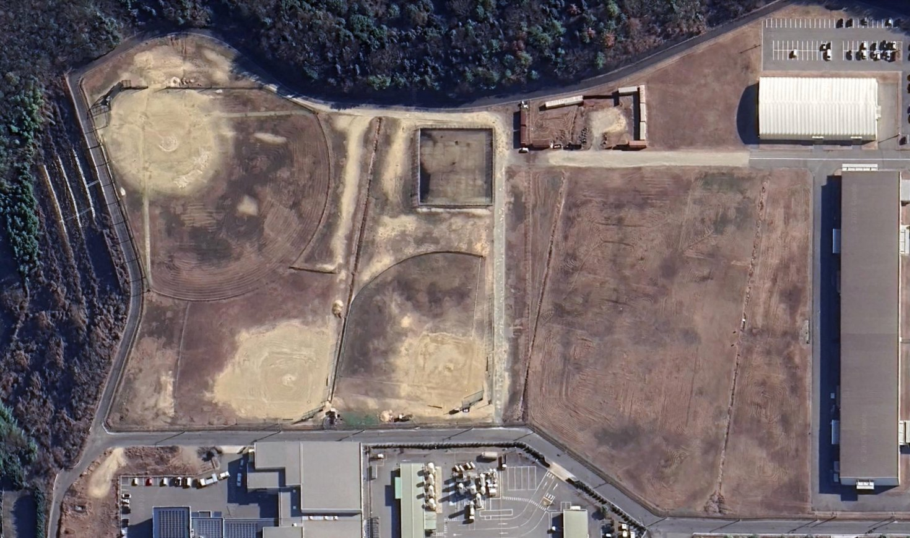

HOME / 1ST TOURNAMENT
THE 1ST
HERO's CUP は、ここから始まります。記念すべき第1回は、広島県三原市・株式会社古川製作所様のグランド（3面使用）をお借りして開催します。広島県内で活動する小学生軟式野球16チームが集まり、2日間・全員野球で戦います。
OUTLINE
開催概要
本ページの内容は第1回大会（HERO's CUP in 三原）に限ったものです。第2回以降の開催地・会場・日程は、あらためて決定・公表します。
| 大会名 | 第1回 HERO'S CUP in 三原 |
|---|---|
| 開催日程 | 2026年11月28日（土）・29日（日） 2日間 |
| 会場 | 株式会社 古川製作所グランド（3面使用）会場をご提供いただく古川製作所様に、心より御礼申し上げます。 |
| 所在地 | 広島県三原市沼田西町小原200-65 |
| 参加チーム | 広島県内で活動する小学生軟式野球チーム 16チーム登録リーグは問いません。 |
| 参加選手数 | 1チーム 最小9名 〜 最大20名 |
| チーム参加費 | 1チーム 5,000円 |
| 試合時間 | 60分制／コールドゲーム無し |
| 形式 | 16チームによるトーナメント戦（交流戦を含む）／1チーム1日2試合 |
| 表彰 | 優勝チーム／準優勝チーム／HERO賞（大会理念を最も体現した選手） |
| 救護体制 | 第1グランド付近に救護ブースを設置。専門の救護士を配備し、怪我や熱中症などに対応します。 |
| 主催 | HERO's CUP 実行委員会 |
三原市・古川製作所グランドでの開催は、第1回大会に限った会場です。HERO's CUP は特定の会場に固定された大会ではなく、理念に賛同いただける地域・企業とともに、開催地を広げていくことを前提に設計しています。第1回の記録と反省は、次回以降の運営に引き継ぎます。
SCHEDULE
想定スケジュール（2日間）
下記は現時点の想定スケジュールです。組み合わせは実行委員会で抽選し決定します。確定版は参加チームへ別途ご案内します。
BRACKET
トーナメント構成
16チームをA・Bの2ブロックに分け、トーナメントを進行します。敗れたチームも交流戦にまわるため、すべてのチームが1日2試合を戦います。「初戦で負けて1日が終わる」を、この大会はつくりません。
各試合の敗者は交流戦にまわります。交流戦も本大会の正式な試合として、全員出場ルール・HERO審査制度・ヒーローインタビューをすべて同じように実施します。交流戦だから手を抜く、という試合はありません。
※組み合わせは実行委員会で抽選し、決めさせていただきます。確定した対戦表は参加チームへ別途ご案内します。
VENUE
会場・レイアウト
第1回大会の会場は、広島県三原市沼田西町小原200-65。3面のグランドを同時に使用し、駐車場・アップ可能エリア・救護ブース・大会本部を配置します。

第1グランド 第2グランド 第3グランド 駐車場A 駐車場B 大会本部・救護ブース アップ可能エリア トイレ| 会場名 | 株式会社 古川製作所グランド（3面使用） |
|---|---|
| 住所 | 広島県三原市沼田西町小原200-65 |
| 駐車場 | 駐車場A・駐車場Bをご用意しています当日は運営スタッフの誘導に従ってご駐車ください。 |
| 設備 | トイレ／アップ可能エリア／救護ブース（第1グランド付近）／大会本部 |
| 飲食 | 会場内にて比治山冷凍カレーの販売を予定しています |
| 撤去 | 17時までに完全撤去 |
第1回大会の表彰
16チームの頂点。2日間を勝ち抜いた1チームを表彰します。
大会理念を最も体現した選手へ。勝敗とは無関係に選ばれる、この大会でいちばん重い賞です。
決勝の舞台に立ったチーム。最後の一球まで戦い抜いた足跡を表彰します。
広島県内で活動する小学生軟式野球チームであれば、登録リーグを問わずご参加いただけます。定員に達し次第、受付を終了します。